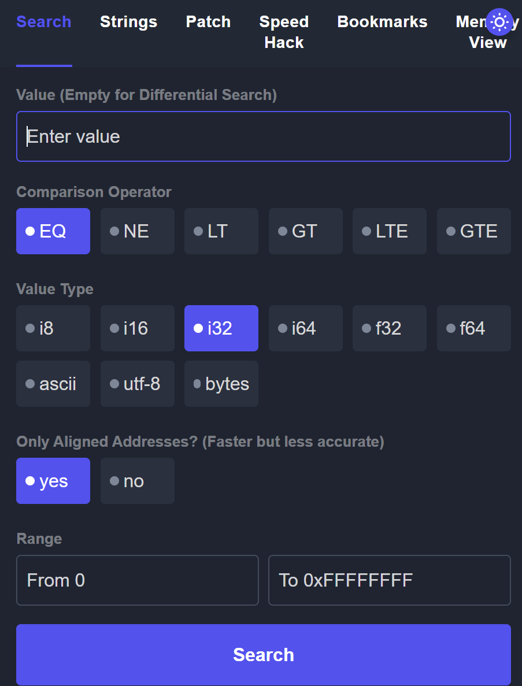

WebAssembly逆向¶
相当于直接运行字节码
...
(local $var86 i64)
(local $var87 i64)
(local $var88 i64)
(local $var89 i64)
(local $var90 i64)
(local $var91 i64)
(local $var92 i64)
local.get $var0
i32.const 36
i32.add
local.tee $var8
...
嵌入在网页中的字节码，用F12就可以看到 *.wasm
到达指定分数给flag¶
用 Cetus 扫内存，类似于 CheatEngine（搜索 cheatengine for wasm 搜到的 ）
针对 Wasm 的搜内存工具

需要分析代码逻辑¶
Webassembly逆向手法 - 先知社区 (aliyun.com)
wat是文本文件，wasm是二进制文件，浏览器可以直接看 wasm 是因为自带 wasm2wat，即WebAssembly/wabt: The WebAssembly Binary Toolkit (github.com) 中的程序
- wat2wasm: translate from WebAssembly text format to the WebAssembly binary format
- wasm2wat: the inverse of wat2wasm, translate from the binary format back to the text format (also known as a .wat)
- wasm-objdump: print information about a wasm binary. Similiar to objdump.
- wasm-interp: decode and run a WebAssembly binary file using a stack-based interpreter
- wasm-decompile: decompile a wasm binary into readable C-like syntax.
- wat-desugar: parse .wat text form as supported by the spec interpreter (s-expressions, flat syntax, or mixed) and print "canonical" flat format
- wasm2c: convert a WebAssembly binary file to a C source and header
- wasm-strip: remove sections of a WebAssembly binary file
- wasm-validate: validate a file in the WebAssembly binary format
- wast2json: convert a file in the wasm spec test format to a JSON file and associated wasm binary files
- wasm-stats: output stats for a module
- spectest-interp: read a Spectest JSON file, and run its tests in the interpreter
逆向¶
- 用 wasm2c，变成c代码之后，再gcc编译，扔进ida分析
- 把wasm拖进Jeb里分析
- 用浏览器自带的动态调试